import pandas as pd
from katlas.train import *
from katlas.dnn import *
from fastai.vision.all import *
from katlas.pssm import *Predict
pspa_unk = pd.read_parquet('out/kd_similar_pspa.parquet')
pspa_unk = pspa_unk[pspa_unk.within_threshold].copy()len(pspa_unk)1230# from katlas.data import *
# kd = Data.get_kd_uniprot()t5 = pd.read_parquet('out/uniprot_kd_t5.parquet')test_pspa = t5.loc[pspa_unk.index].reset_index()Predict
sample=pd.read_parquet('train/pspa_t5.parquet')target_col = sample.columns[~sample.columns.str.startswith('T5')]target_colIndex(['-5P', '-4P', '-3P', '-2P', '-1P', '0P', '1P', '2P', '3P', '4P',
...
'-5pY', '-4pY', '-3pY', '-2pY', '-1pY', '0pY', '1pY', '2pY', '3pY',
'4pY'],
dtype='object', length=230)feat_col = test_pspa.columns[1:]feat_colIndex(['T5_0', 'T5_1', 'T5_2', 'T5_3', 'T5_4', 'T5_5', 'T5_6', 'T5_7', 'T5_8',
'T5_9',
...
'T5_1014', 'T5_1015', 'T5_1016', 'T5_1017', 'T5_1018', 'T5_1019',
'T5_1020', 'T5_1021', 'T5_1022', 'T5_1023'],
dtype='object', length=1024)n_feature = len(feat_col)
n_target = len(target_col)n_feature,n_target(1024, 230)def get_cnn(): return PSSM_model(n_feature,n_target,model='CNN')from tqdm import tqdmdef get_ensemble_pred(test_df, model_name,nfold=5):
ensemble = None
for i in tqdm(range(nfold)):
test_pred = predict_dl(test_df,
feat_col,
target_col,
model_func=get_cnn, # model architecture
model_pth=f'{model_name}_fold{i}', # only name, not with .pth
)
if ensemble is None:
ensemble = test_pred.copy() # start with first prediction
else:
ensemble += test_pred # accumulate
ensemble /= 5
return ensemblepred = get_ensemble_pred(test_pspa,'cnn_pspa')100%|██████████████████████████████████████████████████████████████████████████████████████████████| 5/5 [00:01<00:00, 2.50it/s]pred.index=pspa_unk.indexpred| -5P | -4P | -3P | -2P | -1P | 0P | 1P | 2P | 3P | 4P | ... | -5pY | -4pY | -3pY | -2pY | -1pY | 0pY | 1pY | 2pY | 3pY | 4pY | |
|---|---|---|---|---|---|---|---|---|---|---|---|---|---|---|---|---|---|---|---|---|---|
| index | |||||||||||||||||||||
| A0A8I3S724_AURKA_CANLF_KD1 | 0.040392 | 0.043895 | 0.046737 | 0.019540 | 0.037149 | 0.000031 | 0.013868 | 0.034600 | 0.045904 | 0.048371 | ... | 0.045335 | 0.038903 | 0.040024 | 0.013075 | 0.061543 | 2.734908e-06 | 0.034069 | 0.046313 | 0.060886 | 0.053116 |
| A0A8I5ZNK2_OXSR1_RAT_KD1 | 0.050996 | 0.048736 | 0.043911 | 0.027969 | 0.027601 | 0.000016 | 0.012781 | 0.032713 | 0.051168 | 0.052036 | ... | 0.063858 | 0.052637 | 0.044536 | 0.045119 | 0.063280 | 1.627727e-06 | 0.024475 | 0.023417 | 0.039241 | 0.031538 |
| A0JM20_TYRO3_XENTR_KD1 | 0.050046 | 0.051092 | 0.050607 | 0.050222 | 0.040077 | 0.000006 | 0.014848 | 0.037900 | 0.043439 | 0.043686 | ... | 0.048447 | 0.052223 | 0.054218 | 0.048688 | 0.092844 | 9.998993e-01 | 0.068541 | 0.070969 | 0.022715 | 0.044939 |
| A0JNB0_FYN_BOVIN_KD1 | 0.047442 | 0.047701 | 0.041633 | 0.049929 | 0.032297 | 0.000022 | 0.014933 | 0.037427 | 0.044749 | 0.045341 | ... | 0.057909 | 0.067856 | 0.069088 | 0.058745 | 0.070600 | 9.996487e-01 | 0.113607 | 0.103748 | 0.031480 | 0.042410 |
| A0M8R7_MET_PAPAN_KD1 | 0.047693 | 0.051185 | 0.049119 | 0.049185 | 0.031334 | 0.000003 | 0.013425 | 0.036857 | 0.050250 | 0.047437 | ... | 0.056834 | 0.070674 | 0.065869 | 0.060971 | 0.138563 | 9.999444e-01 | 0.098009 | 0.076506 | 0.025971 | 0.043026 |
| ... | ... | ... | ... | ... | ... | ... | ... | ... | ... | ... | ... | ... | ... | ... | ... | ... | ... | ... | ... | ... | ... |
| Q9Z2R9_E2AK1_MOUSE_KD1 | 0.031652 | 0.028180 | 0.027912 | 0.020828 | 0.018413 | 0.000050 | 0.010048 | 0.028752 | 0.062750 | 0.046122 | ... | 0.035757 | 0.029888 | 0.052818 | 0.029873 | 0.058423 | 9.945286e-07 | 0.021762 | 0.018606 | 0.031788 | 0.038002 |
| Q9Z2W1_STK25_MOUSE_KD1 | 0.043286 | 0.043497 | 0.043395 | 0.035278 | 0.031150 | 0.000017 | 0.016396 | 0.041532 | 0.044069 | 0.047236 | ... | 0.039955 | 0.037115 | 0.045007 | 0.039629 | 0.031814 | 3.337373e-06 | 0.017778 | 0.015846 | 0.028240 | 0.020618 |
| Q9Z335_SBK1_RAT_KD1 | 0.044776 | 0.026182 | 0.029417 | 0.031918 | 0.105806 | 0.000050 | 0.064359 | 0.050416 | 0.070038 | 0.060888 | ... | 0.029673 | 0.024328 | 0.016415 | 0.027795 | 0.034668 | 1.144878e-06 | 0.047789 | 0.043864 | 0.051315 | 0.050917 |
| W0LYS5_CAMKI_MACNP_KD1 | 0.050891 | 0.035838 | 0.024258 | 0.020764 | 0.062022 | 0.000040 | 0.014836 | 0.026737 | 0.027608 | 0.049805 | ... | 0.028077 | 0.023725 | 0.018502 | 0.016933 | 0.033295 | 7.205848e-07 | 0.038284 | 0.111416 | 0.047451 | 0.035479 |
| X5M5N0_WNK_CAEEL_KD1 | 0.036863 | 0.037369 | 0.039815 | 0.050271 | 0.026867 | 0.000034 | 0.018311 | 0.032176 | 0.037724 | 0.042437 | ... | 0.035976 | 0.033020 | 0.034167 | 0.030442 | 0.041148 | 1.485961e-05 | 0.027844 | 0.026991 | 0.029730 | 0.030331 |
1230 rows × 230 columns
test
recover_pssm(pred.iloc[0]).sum()Position
-5 1.0
-4 1.0
-3 1.0
-2 1.0
-1 1.0
0 1.0
1 1.0
2 1.0
3 1.0
4 1.0
dtype: float32cdks = pspa_unk[pspa_unk.closest_pos_index.str.contains('CDK')]for i in cdks.head(20).index:
plot_heatmap(recover_pssm(pred.loc[i]))
plt.show()
plt.close()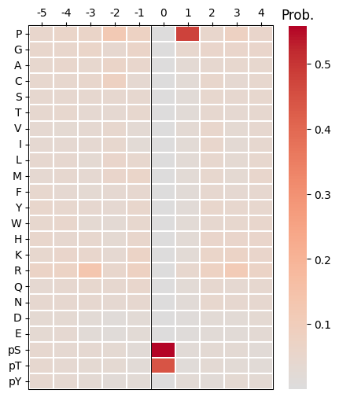
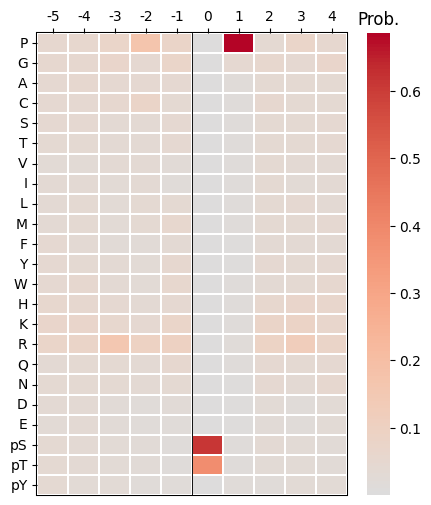
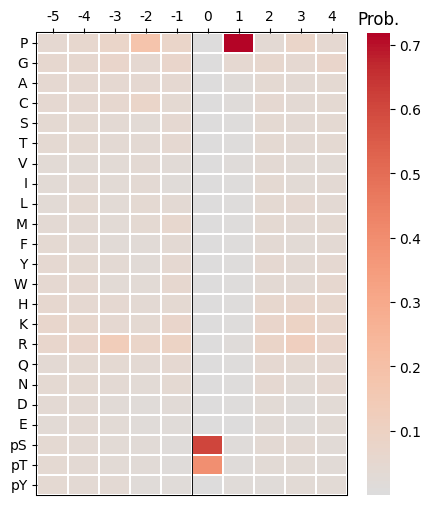
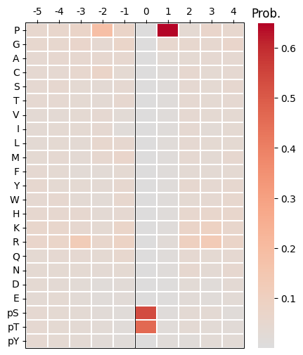
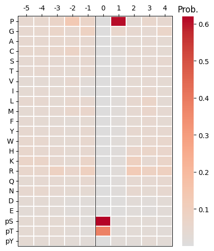
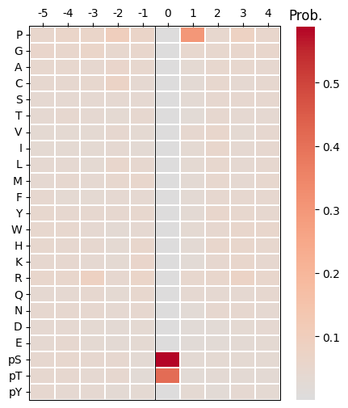
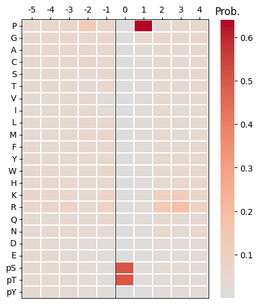
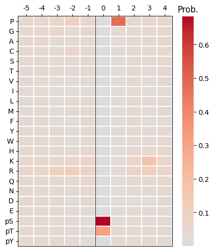

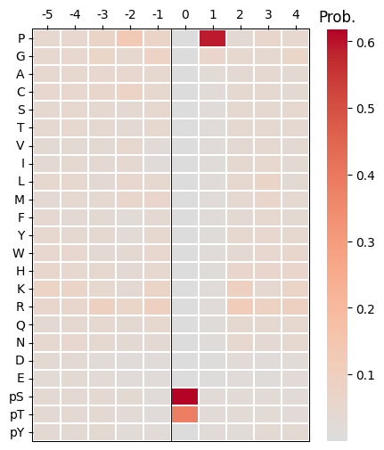
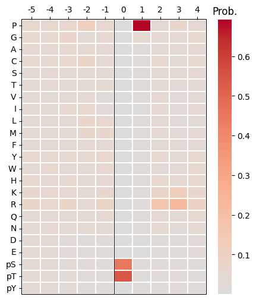
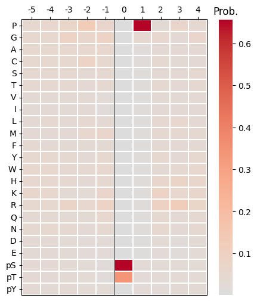

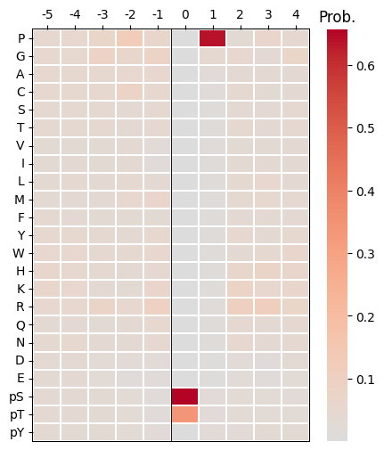
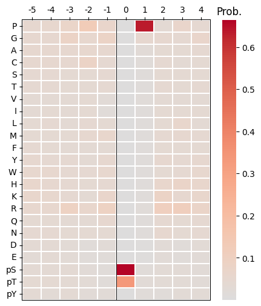
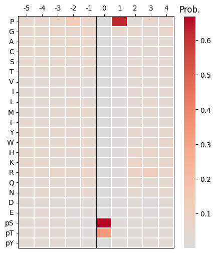